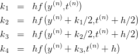

8.5 Métodos de Runge-Kutta
Os métodos de Runge-Kutta consistem em iterações do tipo:
 onde
onde
Os coeficientes são escolhidos de forma que a expansão em Taylor de y(k+1) e
y(k) + w
1k1 + … + wnkn coincidam até ordem n + 1.
Exemplo 8.5.1. O método de Euler melhorado é um exemplo de
Runge-Kutta de segunda ordem

onde
k1 = hf(y(n),t(n)) e
k
2 = hf(y(n) + k
1,t(n) + h)
8.5.1 Métodos de Runge-Kutta - Quarta ordem

onde Este método tem ordem de precisão 4. Uma discussão heurística usando
método de Simpson pode ajudar a compreender os estranhos coeficientes:
onde k1 e k4 representam as inclinações nos extremos e k2 e k3 são duas
aproximações diferentes para a inclinação no meio do intervalo.


![∫ t(n+1)
y(t(n+1)) − y(t(n)) = (n) f (y (s),s)ds
t [ ( ) ( )
≈ h-f y(t(n)),t(n) + 4f y(t(n) + h∕2),t(n) + h∕2
6( ) ]
+ f y(t(n) + h ),t(n) + h
k1 + 4 (k2+k23) + k4
≈ --------6---------](main1404x.png)